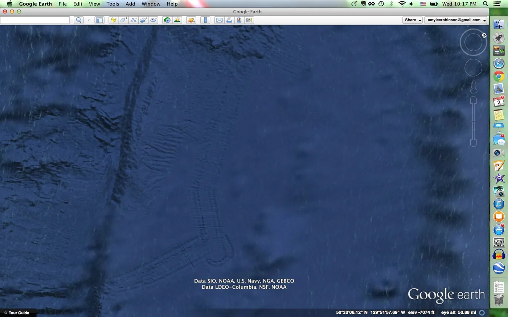
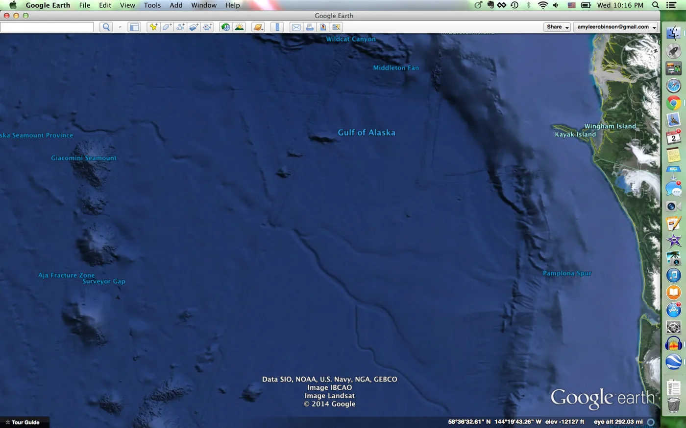

Blog · April 3, 2014
Map Mysteries
Screenshots mysterious things to identify exploring Google Earth.
First, this is beautiful. On a coast of Egypt.
Curious (tweet me your thoughts @amyleerobinson):
1. What made these tracks?
 
from higher altitude:
2. How awesome would it be if there were a map where you could view seasonal changes on demand? Maybe it exists and I just don’t know yet?
3. What is this?
Houses?
4. What are the structures built out in the water?
5. Waves, not clouds?
First published on my old blog, amyrobinson.wordpress.com, April 3, 2014.